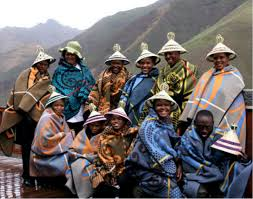
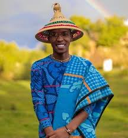

Mokorotlo:a sotho Hat is often worn proudly during ceremonies and symbolizes the basoth culture.
Kobo: a Basotho blanket serves both practical and ceremonial purposes,and warmth.


Basotho men traditionally wear lieta tsa letlalo:handcrafted leather sandals made of cowhide.


Seshoeshoe: seshoeshoe dress is the women’s traditional fashion in Lesotho


Mosetla:a hat that is derived from the mokorotlo hat but has no special significance

Seana marena: the Basotho blanket that is worn often, also it symbolizes the pride of basotho.
Lifaha: a beedwork made jewellery often worn by traditional healers.